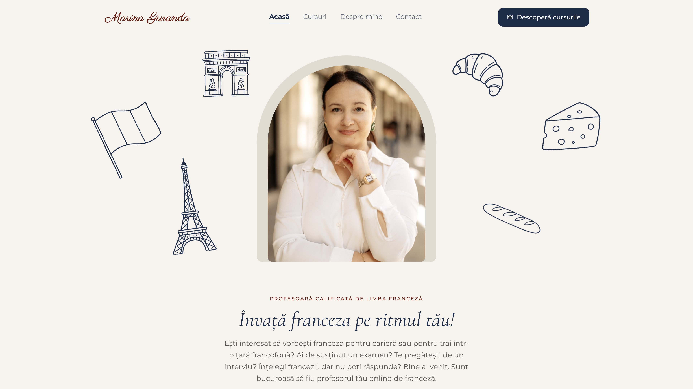
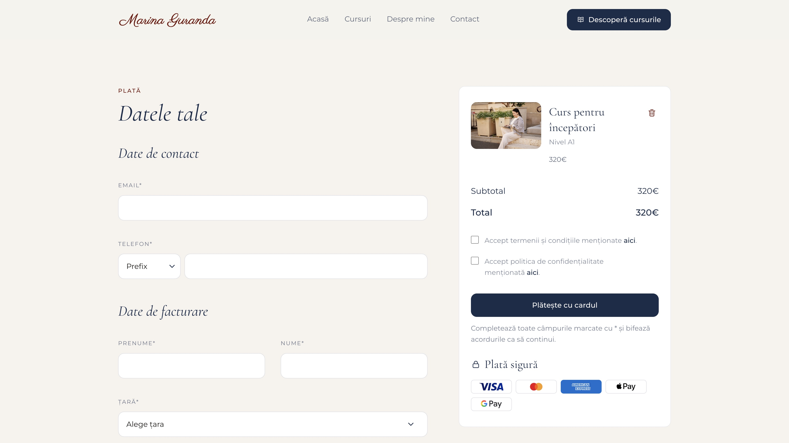
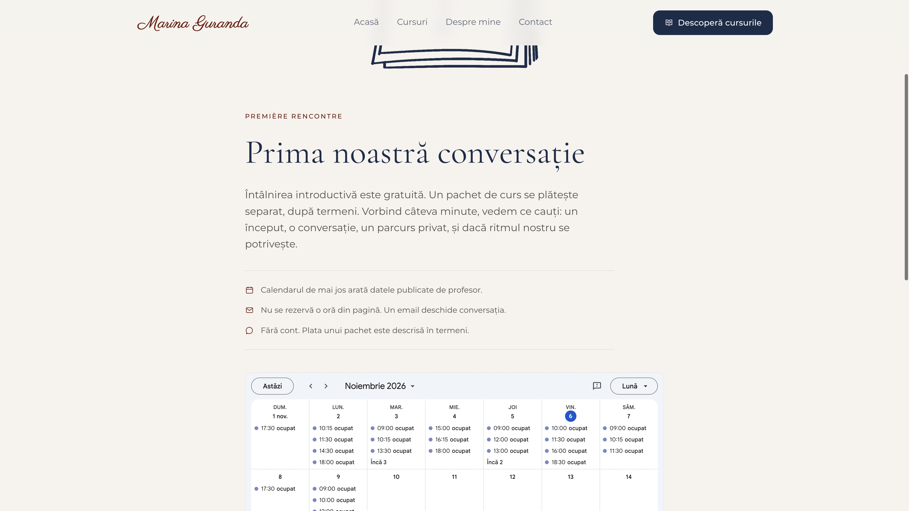
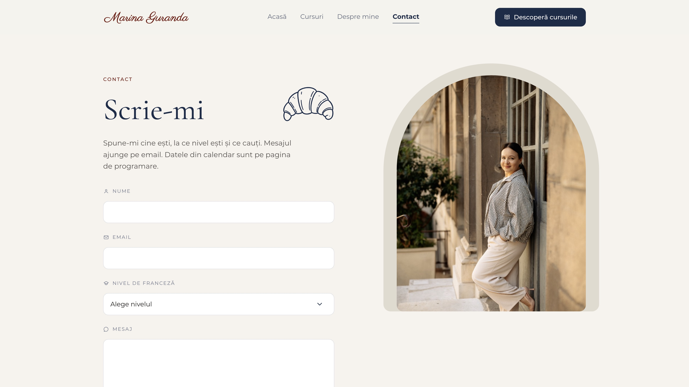
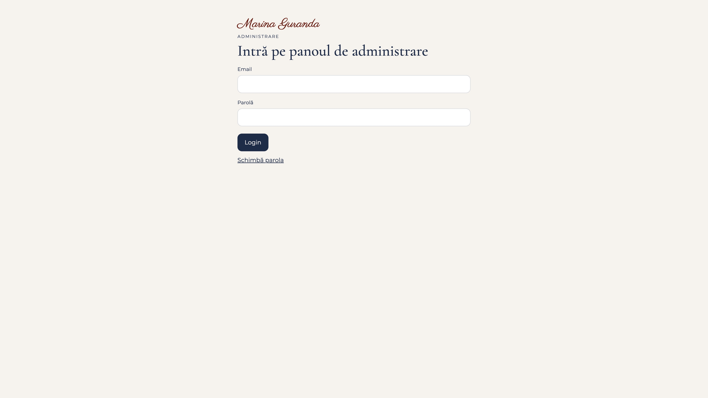

My role
🎨 Design the brand and the product in Figma
Type, colour, photography, illustrations, and every key screen before a line of production code.
🔗 Hand off through Figma MCP, not screenshots
Cursor read the Figma file so implementation followed the designed spacing, type, and components instead of guessing.
🛒 Build the buying and booking path
Course catalog, checkout with Stripe, Google Calendar for intro meetings, and a contact form that arrives by email.
🗂️ Make a back office a teacher can use
Login-protected editing for home, courses, about, booking copy, testimonials, and legal pages, so Marina can update the site without waiting on a developer.
🏗️ Ship inside real hosting limits
Hostico Start cannot run Node. Production is a static export plus a PHP payment endpoint, with the Node app kept for local preview and the back office.

Design in Figma
The site had to feel like a teacher, not a marketplace. I started in Figma with an editorial layout: cream paper, navy type, a burgundy script wordmark, arched portrait frames, and line drawings of Paris and everyday French objects. Those motifs keep long course pages from looking like a price list.
Information architecture is short on purpose. Home answers who Marina is and who the courses are for. Cursuri splits group, 1-to-1, and children. Despre mine holds the story and credentials. Contact and Programare are two different jobs: write a message, or look at published dates for a free intro conversation. Payment is a dedicated checkout, not a cart buried in the catalog.
Components were designed as a small system: buttons, fields, course cards, legal checkboxes, and a sticky header CTA. That made the later MCP-to-code step faster, because Cursor could reuse the same patterns instead of inventing a new layout on every page.

From Figma to Cursor with Figma MCP
Once the screens were solid, I connected the Figma file to Cursor through Figma MCP. The agent could inspect frames, auto-layout, colour styles, and component structure, then implement them in Next.js and Tailwind. I still reviewed every screen. MCP saved the hours that usually go into describing padding, type scale, and component variants by hand.
That workflow also protected the design. When checkout, calendar, and admin were added, they inherited the same cream, navy, and serif language instead of drifting into a generic form UI. Constraints from hosting and payments were solved in code, without throwing away the Figma source of truth.
Webshop
Students choose a course, pick a level when it matters, then land on a checkout that collects contact and billing details before Stripe. The form does not take card numbers on our servers. It validates required fields and legal consent, then opens Stripe Checkout with the course, level, and email attached as a reference so Marina can match the payment to a person.
The catalog stays readable: price, duration, group size, Zoom, and what is included. Checkout is a two-column layout so the order summary stays visible while the student fills the form. That is a trust choice. For a small teaching business, people need to see what they are buying next to the fields they are typing.

Calendar
The intro meeting is free and should not require an account. Building a full booking product would have been more than Marina needed, and harder to host. I embedded her public Google Calendar instead: month view on desktop, agenda on smaller screens, Europe and Paris as the timezone, Romanian as the interface language.
The page copy is honest about the constraint. The calendar shows dates she publishes. Students still write or email to start the conversation. That keeps availability in a tool she already uses, and keeps the website from becoming a second calendar to maintain.

Contact form
The form asks for name, email, French level, and a message, then sends them to Marina's inbox through FormSubmit. A hidden honeypot field drops obvious bots. Students get a clear sent, confirm, or error state so they are not left wondering if the message went through.
Contact and calendar are split because they solve different moments. Someone who already knows what they want should not have to hunt for a date. Someone browsing availability should not be forced through a long form first.

Back office
A static brochure would go stale as prices and course lists change. The admin area is a password-protected panel where Marina can edit home, each course, about, booking text, testimonials, terms, and privacy. Saves write into structured content, including photo uploads for testimonials.
I kept the back office visually quiet on purpose. It reuses the same type and colour so it still feels like her site, but the job is editing, not marketing. There is a password reset path so she is not locked out if a device changes.

Technologies
- Figma for identity, layouts, and components, then Figma MCP as the bridge into Cursor.
- Next.js, React, and TypeScript for pages, checkout, and the admin app.
- Tailwind for the visual system taken from the Figma file.
- Stripe Checkout for card payments, including Apple Pay and Google Pay where Stripe offers them.
- Google Calendar embed for published intro dates.
- FormSubmit for the contact form, without standing up a mail server.
- Apache on Hostico for the public site, with a static export and PHP only where payment needs a server.
Constraints and reasoning
Three constraints shaped the architecture. First, the audience is Romanian, so the entire product is in Romanian, including form labels, legal copy, and calendar language. Second, Hostico Start does not run Node, so the marketing site is exported as static files. A PHP endpoint handles the Stripe session when the Node API is not available. Third, Marina works alone. She needed to change copy and prices without a deploy from me every time, which is why the back office exists.
I also chose not to collect cards on the site, not to invent a booking engine, and not to put a shopping cart on the catalog. Each of those would have added accounts, more hosting complexity, and more ways for a student to get stuck. The site's job is to explain the offer, make payment feel safe, and start a conversation.
Delivery
See the live website at marinaguranda.fr Course catalog Intro meeting calendar Contact form